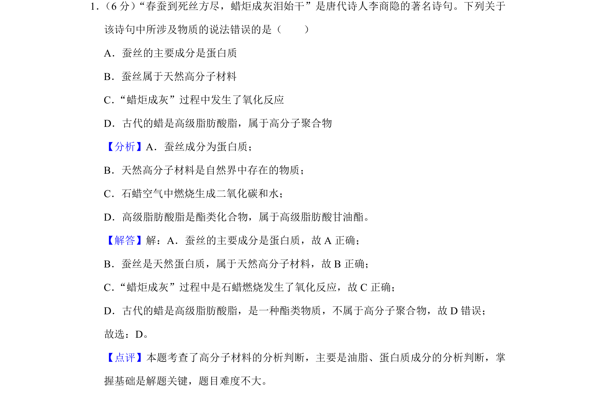
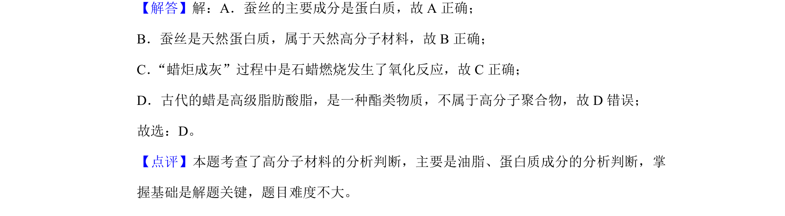

考点：蛋白质 高分子材料 氧化反应 聚合物

蚕丝的主要成分是蛋白质，属于天然高分子材料；蜡炬燃烧涉及氧化反应，高级脂肪酸脂不属于高分子聚合物。

📄 原 PDF 第 1 页：
素材/真题/吉林/2008-2024·（吉林）化学高考真题/2019年高考化学试卷（新课标Ⅱ）（解析卷）.pdf
1． （6分）“春蚕到死丝方尽，蜡炬成灰泪始干”是唐代诗人李商隐的著名诗句。下列关于 该诗句中所涉及物质的说法错误的是（ ） A．蚕丝的主要成分是蛋白质 B．蚕丝属于天然高分子材料 C．“蜡炬成灰”过程中发生了氧化反应 D．古代的蜡是高级脂肪酸脂，属于高分子聚合物
【分析】A．蚕丝成分为蛋白质； B．天然高分子材料是自然界中存在的物质； C．石蜡空气中燃烧生成二氧化碳和水； D．高级脂肪酸脂是酯类化合物，属于高级脂肪酸甘油酯。 【解答】解：A．蚕丝的主要成分是蛋白质，故A正确； B．蚕丝是天然蛋白质，属于天然高分子材料，故B正确； C．“蜡炬成灰”过程中是石蜡燃烧发生了氧化反应，故C正确； D．古代的蜡是高级脂肪酸脂，是一种酯类物质，不属于高分子聚合物，故D错误； 故选：D。 【点评】本题考查了高分子材料的分析判断，主要是油脂、蛋白质成分的分析判断，掌 握基础是解题关键，题目难度不大。